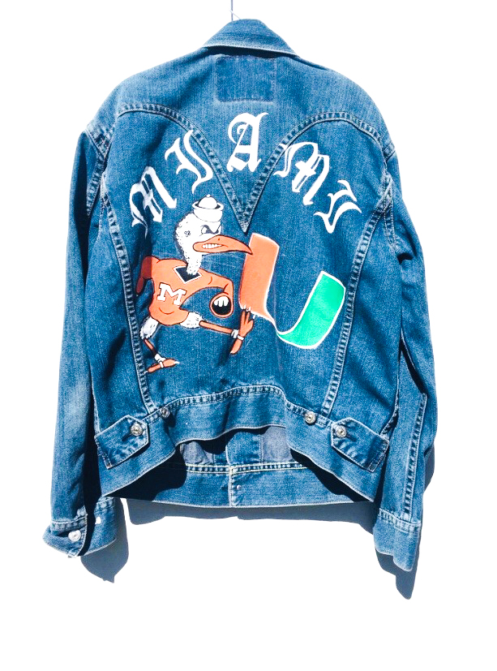
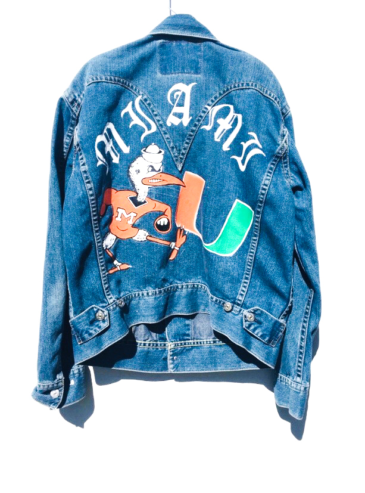
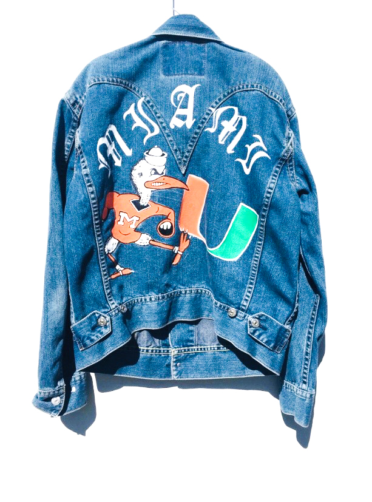

Passion project
As a passion project of mine I often enjoy going to thrift shops and finding old denim that I can customize, paint, and refurbish. To the right you can view a denim shirt I painted and styled in my free time.
 



As a passion project of mine I often enjoy going to thrift shops and finding old denim that I can customize, paint, and refurbish. To the right you can view a denim shirt I painted and styled in my free time.
